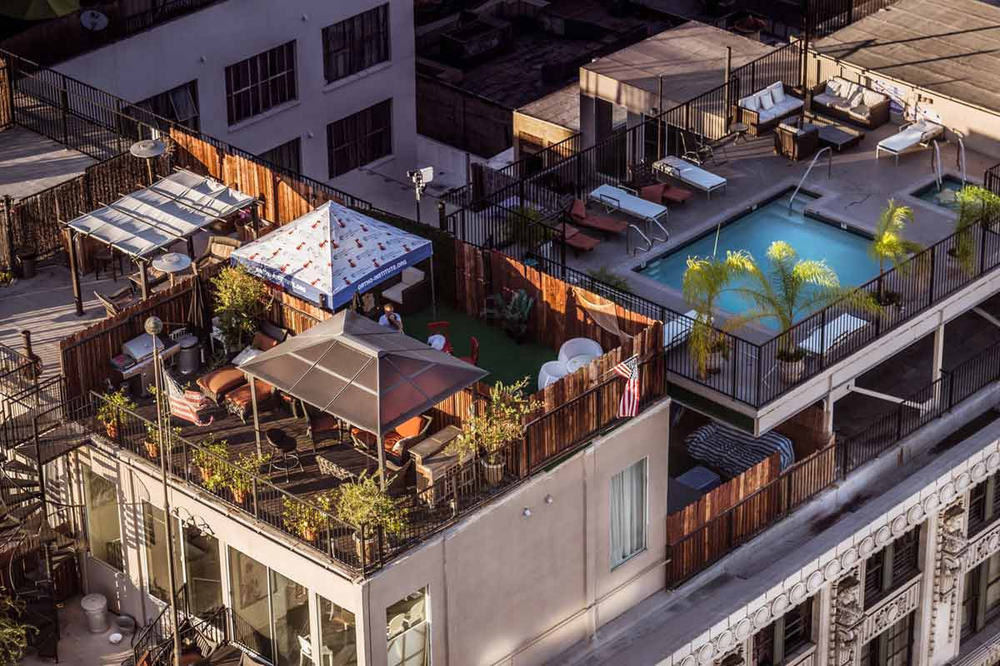

Museum Bahari Ngera Shells menyimpan ribuan koleksi cangkang moluska dan warisan bahari Ende, Flores, NTT. Temukan keajaiban alam, sejarah maritim, dan keindahan cangkang laut dalam satu tempat.
Salah satu indikator peradaban maju dan berkembang di suatu wilayah adalah keberadaan museum. Museum tidak hanya menyimpan benda-benda kuno atau artefak dari berbagai aspek kehidupan, tetapi juga menjadi sarana informasi dan objek wisata, khususnya wisata bahari.
Kehadiran museum di suatu wilayah dapat menyelamatkan benda dan artefak dari kepunahan serta kerusakan alami. Sesuai dengan tujuan dan latar belakangnya, museum berfungsi untuk mengumpulkan, mendokumentasikan, dan menarasikan koleksi guna edukasi tentang perlindungan dan pelestarian alam kepada masyarakat luas, khususnya pelajar dan mahasiswa.
Museum ini berupaya melestarikan kembali warisan budaya yang hampir dan akan punah di berbagai bidang kehidupan, terkhususnya siput, kerang, serta biota laut lainnya. Keberadaan Museum Bahari yang dibangun tahun 1996 menjadi salah satu indikator penting pembangunan kebudayaan daerah dalam mendukung Kebudayaan Nasional.
Namun sayang, Museum Bahari yang terletak di dalam kawasan Taman Renungan telah dibongkar pada Januari 2013 oleh Yayasan Ende Flores, seiring revitalisasi Taman Renungan Bung Karno.
Karena vakum dalam kurun waktu yang tidak menentu, serta ketiadaan lahan dan biaya, muncullah ide untuk merancang Museum secara Daring agar dapat dipublikasikan kembali kepada masyarakat luas. Dalam upaya tersebut, saya menyampaikan niat yang selama ini saya pendam untuk mewujudkan museum virtual.
Mengingat banyaknya kendala yang saya hadapi, khususnya dari sisi biaya dan lahan, saya berinisiatif berdiskusi dengan Bapak Markus Paru—sahabat dan rekan kerja yang sangat profesional di bidangnya—untuk mewujudkan ide dan pemikiran saya. Setelah menyampaikan pandangan saya dan beliau menyatakan siap membantu, maka sejak tanggal 15 Juni 2026 beliau langsung memulai merancang aplikasi khusus untuk Museum Bahari Ende "Ngera Shells".
Besar harapan dan niat baik kami agar kehadiran museum ini membawa manfaat bagi masyarakat luas, khususnya pelajar dan mahasiswa yang haus akan seni dan pengetahuan baru. Melalui aplikasi daring ini, kami juga berharap dapat mengumpulkan DONASI dari dukungan masyarakat luas dalam mewujudkan niat kami, yakni pembangunan Museum secara fisik nyata di Kabupaten Ende, Nusa Tenggara Timur, Indonesia.
Ende, 15 Juni 2026
Pemilik dan Pengelola
Museum Bahari Ende "Ngera Shells"
Kalianus Nusa Nipa

Spesies kerang raksasa yang dilindungi, merupakan salah satu koleksi unggulan dengan berat dan ukuran yang memukau.

Cangkang nautilus asli dengan pola spiral sempurna, dikenal sebagai "fosil hidup" dari laut dalam yang langka.

Kerang kerucut marmer yang dikenal dengan pola cangkangnya yang indah namun memiliki racun sengat yang berbahaya.

Fosil cangkang kepala lunak purba yang berusia jutaan tahun, ditemukan di formasi batuan kuno di wilayah NTT.

Spesies kerang perut besar dengan warna oranye cerah yang sangat langka, digunakan sebagai pembanding koleksi.

Koleksi lengkap berbagai jenis cangkang abalon dengan lapisan mutiara (nacre) berwarna-warni yang memukau.

Pendiri Museum

Penerus Museum Bahari

Desainer & Kurator

Pengelola

Pengalaman yang sangat mendidik dan memukau. Anak-anak saya sangat terkesan dengan koleksi cangkang raksasa dan penjelasan dari pemandu yang ramah.

Sebagai mahasiswa, museum ini adalah harta karun data dan spesimen yang luar biasa. Koleksi fosil dan klasifikasinya sangat lengkap untuk referensi.

Salah satu koleksi cangkang moluska terbaik di Indonesia Timur. Dedikasi Pater Gabriel dan tim dalam melestarikan warisan bahari sangat patut diacungi jempol.


Tim museum melakukan penyelaman dokumentasi untuk mengidentifikasi spesies moluska baru di pesisir Ngera.

Kegiatan edukasi interaktif mengenalkan pentingnya menjaga ekosistem laut dan keanekaragaman hayati cangkang.

Perjalanan panjang Pater Gabriel Goran dalam mengumpulkan ribuan cangkang hingga menjadi museum yang diakui.
Bantu kami mewujudkan pembangunan fisik Museum Bahari Ende "Ngera Shells". Setiap kontribusi Anda, sekecil apapun, sangat berarti untuk menyelamatkan dan melestarikan warisan budaya bagi generasi mendatang.
Setelah melakukan transfer, mohon konfirmasi melalui WhatsApp agar kami dapat mencatat dan mengucapkan terima kasih atas kebaikan Anda.
{kind=link}
{kind=link}
{kind=link}
{kind=link}
{kind=link}
{kind=link}
{kind=link}
{kind=link}
{kind=link}